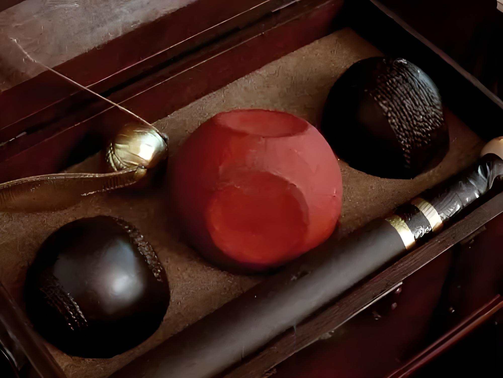

魁地奇比赛介绍
欢迎进入魔法世界的巫师运动——魁地奇的世界！
魁地奇的起源与发展
魁地奇起源于11世纪的“魁地沼泽”，最初的比赛形式与现代有许多不同，但其基本理念已定型。
随着飞天扫帚的普及，这项运动逐渐成为巫师世界的重要文化象征，甚至被誉为巫师们的“国民运动”。
比赛规则与计分方式
魁地奇的规则如下：
- 比赛分为两队，每队7名队员。
- 通过使用鬼飞球投进球门得分，每次得分10分。
- 比赛以找到并抓住金色飞贼为结束，被抓后获得150分。
队员角色分工
!!可把鼠标放置在不同角色上可查看重要人物，点击可查看人物详情
- 追球手（Chaser）
- 负责将鬼飞球投进球门得分。
- 击球手（Beater）
- 用球棒击打游走球以干扰对方选手。
- 守门员（Keeper）
- 守护球门，防止对方得分。
- 找球手（Seeker）
- 专注于寻找并抓住金色飞贼。
常见比赛器材
- 飞天扫帚：所有队员的交通工具。
- 鬼飞球：红色，主要得分工具，需用手操作。
- 游走球：黑色，具有攻击性的球，用以打击对手。
- 金色飞贼：金色，灵活性高，若隐若现，关键目标，抓住后比赛结束。

比赛场地与设定
魁地奇比赛场地为一个椭圆形场地，两端设有三个不同高度的圆环球门。
场地外围通常设有看台，以便观众可以观看比赛。
比赛环境可能受到天气、魔法元素影响，增加了比赛的挑战性与趣味性。
（图片为魁地奇世界杯场地图，网页背景为霍格沃茨学校魁地奇场地图）
最后！来让我们一起欣赏一下精彩绝伦的魁地奇世界杯吧！